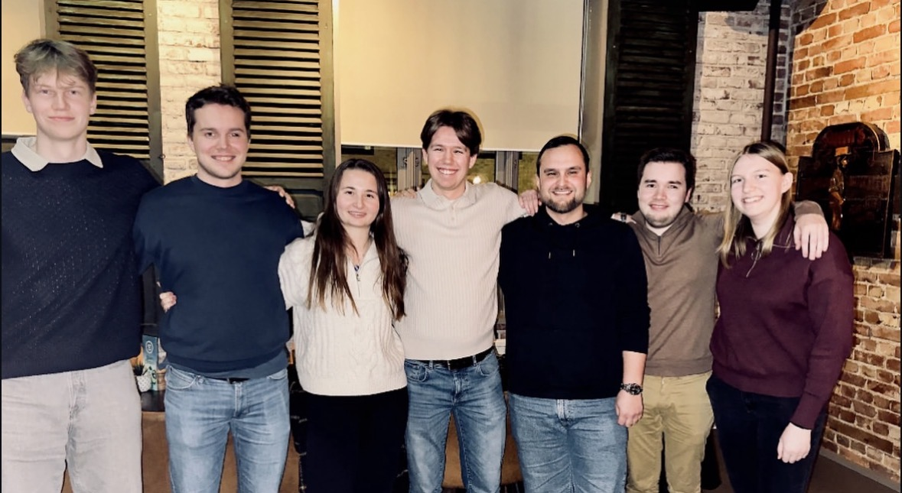
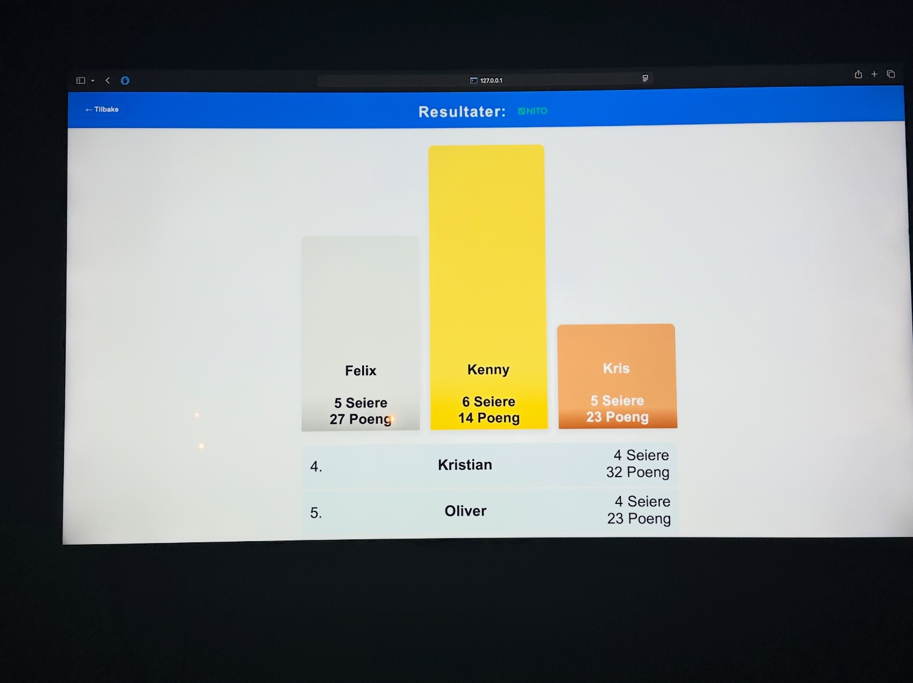
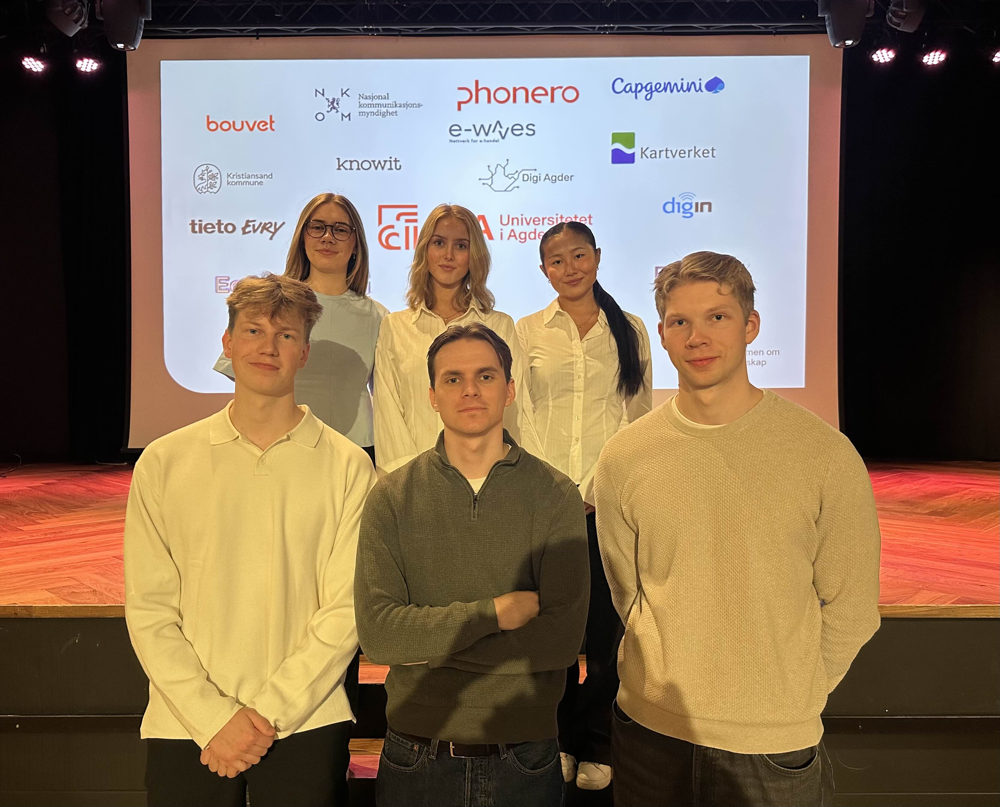
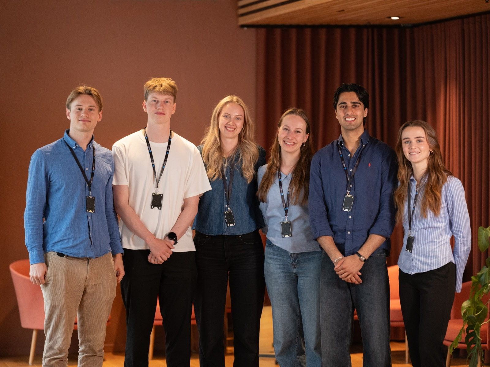

Hvordan jeg kom hit
Her er alt jeg har gjort til nå.
Mitt første semester innen IT
Her startet jeg på en bachelor i IT og Informasjonssystemer på UiA. Det var en rolig start med lite programmering, men fungerte som en god introduksjon til fagområdet.
Mitt andre semester
Det andre semesteret besto også mye av introduksjoner og teoretiske emner. Her ble jeg blant annet introdusert til objektorientert programmering i Java, Docker og terminalen. Jeg fikk også en stilling som studentmentor og læringsassistent i IS-104, hvor jeg fikk muligheten til å ta TFL-129 dette semesteret som forberedelse på mentorrollen til neste år.
Mitt første eget prosjekt
Sommeren etter mitt andre semester var første gangen jeg ble interessert i faget på ekte. Før dette hadde jeg bare lært det jeg måtte, men nå brukte jeg sommeren til å utforske utvikling på egenhånd, og fant ut dette var egentlig ganske gøy. Jeg lagde min egen nettside for noen venner, hvor vi kunne lese informasjon om et spill. Nettsiden besto av HTML, CSS og JavaScript, og var veldig enkel da den ble laget for første gang.
Starten av andre året på studiet
På det tredje semesteret på IT-studiet hadde vi et stort prosjekt på tvers av alle tre emnene.
Prosjektet gikk ut på å lage en crowdsourcing-løsning for Kartverket til å rapportere inn feil i
kartet. Målet var å utvikle ideer til hvordan Kartverket kan forbedre sin eksisterende løsning. Dette
var første gangen jeg fikk mulighet til å jobbe med flere forskjellige teknologier på en gang, og det
å jobbe i et skikkelig prosjekt.
I tillegg var jeg også mentor og læringsassistent i IS-104,
hvor jeg ble introdusert til det å lede og lære bort. Mentorrollen besto mye av å hjelpe studentene
både faglig og sosialt, ved hjelp av veiledning i gruppetimer og felles mentormøter.
Fjerde semester
Det fjerde semesteret besto av valgemner, hvor jeg valgte å ta de mest tekniske emnene. Her lærte jeg blant annet mye om moderne forskjellige teknologier, databaser og GIS. I tillegg ble jeg også stemt inn som styremedlem i NITO Studentene i Kristiansand, som var starten på reisen min i NITO.

En sommer med egne prosjekter
Denne sommeren brukte jeg på å utvikle flere egne prosjekter, blant annet en React-app for porteføljen min og en Python-app for padel-turneringer som jeg har arrangert sammen med NITO-studentene Kristiansand i etterkant. Jeg fortsatte også videre med den første nettsiden jeg lagde forrige sommer, med å blant annet konfigurere eget domene og legge til henting av data fra spillets API for å vise statistikk. Fokuset denne sommeren var å bli bedre på å kode uten å bruke AI, så prosjektene her var mindre, men også uten AI som hjelpemiddel.

Femte semester
Det femte semesteret av bacheloren gikk mest ut på å gjøre klar til bacheloroppgaven. Sammen med bachelorgruppen min utviklet vi vår egen gruppe-CV som vi brukte for å søke etter bacheloroppgaver. I tillegg jobbet jeg også som mentor og læringsassistent igjen. Jeg ble også valgt til arrangementansvarlig i NITO Studentene Kristiansand, hvor jeg fikk muligheten til å gjøre mye gøy, blant annet padel-turnering med eget utviklet poengsystem og holde et Figma-kurs for studentene på første året.

Bacheloroppgaven
Det siste semesteret av bacheloren gikk til bacheloroppgaven: en kildesorteringsapp med gamifisering og maskinlæring. Brukeren tar bilde av en gjenstand, en ML-modell gjenkjenner materialet, og poeng og nivåer motiverer til å sortere mer. Oppgaven ble levert med karakteren A.
Det jeg gjør nå
Akkurat nå er jeg sommerstudent hos Geodata, hvor jeg jobber med et veildig spennende prosjekt for Norsk luftambulanse, hvor vi utvikler et automatiske tester og synkroniseringer for å få en status over kartlagene som brukes i appen deres.

Teknologier